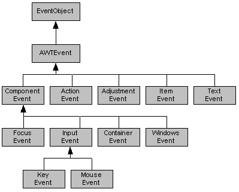
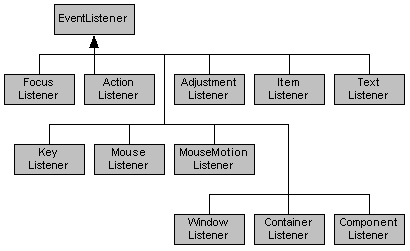

28.1 Das Event-Handling seit dem JDK 1.1
28.1.1 Grundlagen
Bei der Programmierung unter einer grafischen Oberfläche erfolgt
die Kommunikation zwischen Betriebssystem und Anwendungsprogramm zu
einem wesentlichen Teil durch das Versenden von Nachrichten. Die Anwendung
wird dabei über alle Arten von Ereignissen und Zustandsänderungen
vom Betriebssystem informiert. Dazu zählen beispielsweise Mausklicks,
Bewegungen des Mauszeigers, Tastatureingaben oder Veränderungen
an der Größe oder Lage des Fensters.
Bei der Verarbeitung des Nachrichtenverkehrs sind zwei verschiedene
Arten von Objekten beteiligt. Die Ereignisquellen
(Event Sources) sind die Auslöser
der Nachrichten. Eine Ereignisquelle kann beispielsweise ein Button
sein, der auf einen Mausklick reagiert, oder ein Fenster, das mitteilt,
dass es über das Systemmenü geschlossen werden soll. Die
Reaktion auf diese Nachrichten erfolgt in den speziellen Ereignisempfängern
(den EventListeners); das sind Objekte,
die das zum Ereignis passende Empfänger-Interface implementieren.
Damit ein Ereignisempfänger die Nachrichten einer bestimmten
Ereignisquelle erhält, muss er sich bei dieser registrieren.
Dieses Kommunikationsmodell nennt sich Delegation Event Model
oder Delegation Based Event Handling
und wurde mit der Version 1.1 des JDK eingeführt. Um beispielsweise
auf einen Buttonklick zu reagieren, muss man eine EventListener-Klasse
schreiben, instanzieren und bei der Ereignisquelle registrieren.
Wir werden feststellen, dass das Modell eine Vielzahl von unterschiedlichen
Möglichkeiten impliziert, Ereignishandler zu implementieren.
Diese sind je nach Anwendungsfall unterschiedlich gut oder schlecht
geeignet, den jeweiligen Nachrichtenverkehr abzubilden. Wir werden
uns in diesem Kapitel insbesondere mit folgenden Entwurfsmustern beschäftigen:
- Die Fensterklasse implementiert die erforderlichen EventListener-Interfaces,
stellt die erforderlichen Callback-Methoden zur Verfügung und
registriert sich selbst bei den Ereignisquellen.
- In der Fensterklasse werden lokale oder anonyme Klassen definiert,
die einen EventListener
implementieren oder sich aus einer Adapterklasse
ableiten (eine Adapterklasse implementiert ein Interface mit mehreren
Methoden und erlaubt es somit abgeleiteten Klassen, nur noch die Methoden
zu überlagern, die tatsächlich von Interesse sind).
- GUI-Code und Ereignisbehandlung werden vollkommen getrennt und
auf unterschiedliche Klassen verteilt.
- In der Komponentenklasse werden die Methoden überlagert,
die für das Empfangen und Verteilen der Nachrichten erforderlich
sind.
Wir werden uns jede dieser Varianten in den nachfolgenden Abschnitten
ansehen und ihre jeweiligen Einsatzmöglichkeiten anhand eines
Beispiels aufzeigen. Zunächst sollen jedoch die verschiedenen
Ereignistypen sowie die Ereignisempfänger und Ereignisquellen
näher beleuchtet werden. Wir wollen dabei (etwas unscharf) die
Begriffe Ereignis, Nachricht und Event in diesem Kapitel synonym verwenden,
wenn wir innerhalb eines GUI-Programms die ausgetauschten Nachrichten
oder ihre auslösenden Ereignisse meinen.
Die Details einzelner Ereignisarten werden in den nachfolgenden Kapiteln
schrittweise erklärt und zusammen mit den zugehörigen Ereignisquellen
vorgestellt.
Die Ereignistypen werden durch eine Hierarchie von Ereignisklassen,
die aus der Klasse java.util.EventObject
abgeleitet sind, repräsentiert. Die Motivation der Java-Designer,
diese Klasse in das Paket java.util
zu legen, resultierte wohl aus der Überlegung, dass der Transfer
von Nachrichten nicht allein auf den Oberflächenteil beschränkt
sein muss, sondern auch zwischen anderen Elementen einer komplexen
Anwendung sinnvoll sein kann. Die Klasse java.util.EventObject
fungiert damit als allgemeine Oberklasse aller Arten von Ereignissen,
die zwischen verschiedenen Programmteilen ausgetauscht werden können.
Ihre einzige nennenswerte Fähigkeit besteht darin, das Objekt
zu speichern, das die Nachricht ausgelöst hat, und durch Aufruf
der Methode getSource
anzugeben:
Die Hierarchie der AWT-spezifischen Ereignisklassen beginnt eine Ebene
tiefer mit der Klasse AWTEvent,
die aus EventObject
abgeleitet wurde und sich im Paket java.awt
befindet. AWTEvent
ist Oberklasse aller Ereignisklassen des AWT. Diese befinden sich
im Paket java.awt.event,
das damit praktisch in jede Klasse einzubinden ist, die sich mit dem
Event-Handling von GUI-Anwendungen beschäftigt. Abbildung 28.1
gibt einen Überblick über die Vererbungshierarchie der Ereignisklassen.

Abbildung 28.1: Die Hierarchie der Ereignisklassen
Die Dokumentation zum JDK unterteilt diese Klassen in zwei große
Hierarchien. Unterhalb der Klasse ComponentEvent
befinden sich alle Low-Level-Ereignisse. Sie sind für
den Transfer von elementaren Nachrichten zuständig, die von Fenstern
oder Dialogelementen stammen. Die übrigen Klassen ActionEvent,
AdjustmentEvent,
ItemEvent
und TextEvent
werden als semantische Ereignisse bezeichnet. Sie sind nicht
an ein bestimmtes GUI-Element gebunden, sondern übermitteln höherwertige
Ereignisse wie das Ausführen eines Kommandos oder die Änderung
eines Zustands.
Falls das Programm eigene Eventklassen definieren will und Konstanten
zur Vergabe der Event-Ids vergeben muss, sollten diese oberhalb der
symbolischen Konstante RESERVED_ID_MAX
liegen.
Damit ein Objekt Nachrichten empfangen kann, muss es eine Reihe von
Methoden implementieren, die von der Nachrichtenquelle, bei der es
sich registriert hat, aufgerufen werden können. Um sicherzustellen,
dass diese Methoden vorhanden sind, müssen die Ereignisempfänger
bestimmte Interfaces implementieren, die aus der Klasse EventListener
des Pakets java.util
abgeleitet sind. Diese EventListener-Interfaces
befinden sich im Paket java.awt.event.
Je Ereignisklasse gibt es ein EventListener-Interface.
Es definiert eine separate Methode für jede Ereignisart dieser
Ereignisklasse. So besitzt beispielsweise das Interface MouseListener
die Methoden mouseClicked,
mouseEntered,
mouseExited,
mousePressed
und mouseReleased,
die bei Auftreten des jeweiligen Ereignisses aufgerufen werden. Abbildung 28.2
gibt eine Übersicht über die Hierarchie der EventListener-Interfaces.

Abbildung 28.2: Die Hierarchie der EventListener-Interfaces
Die Ereignisse stammen von den Ereignisquellen, also von Fenstern,
Dialogelementen oder höheren Programmobjekten. Eine Ereignisquelle
sendet aber nur dann Ereignisse an einen Ereignisempfänger, wenn
dieser sich bei der Ereignisquelle registriert hat. Fehlt eine
solche Registrierung, wird die Ereignisquelle keine Ereignisse senden
und der Empfänger folglich auch keine erhalten.
Die Registrierung erfolgt mit speziellen Methoden, an die ein Objekt
übergeben wird, das das jeweilige EventListener-Interface
implementiert. So gibt es beispielsweise eine Methode addMouseListener
in der Klasse Component,
mit der ein Objekt, das das Interface MouseListener
implementiert, sich für den Empfang von Mausereignissen bei der
Komponente registrieren lassen kann. Nach erfolgter Registrierung
wird bei jedem Mausereignis die entsprechende Methode mouseClicked,
mouseEntered,
mouseExited,
mousePressed
oder mouseReleased
aufgerufen.
28.1.5 Adapterklassen
Eine Adapterklasse in Java ist eine
Klasse, die ein vorgegebenes Interface mit leeren Methodenrümpfen
implementiert. Adapterklassen können verwendet werden, wenn aus
einem Interface lediglich ein Teil der Methoden benötigt wird,
der Rest aber uninteressant ist. In diesem Fall leitet man einfach
eine neue Klasse aus der Adapterklasse ab, anstatt das zugehörige
Interface zu implementieren, und überlagert die benötigten
Methoden. Alle übrigen Methoden des Interface werden von der
Basisklasse zur Verfügung gestellt.
Zu jedem der Low-Level-Ereignisempfänger stellt das Paket java.awt.event
eine passende Adapterklasse zur Verfügung. So gibt es die Adapterklassen
FocusAdapter,
KeyAdapter,
MouseAdapter,
MouseMotionAdapter,
ComponentAdapter,
ContainerAdapter
und WindowAdapter.
Sie implementieren die korrespondierenden Interfaces. Wir werden später
bei der Beschreibung der lokalen und anonymen Klassen sehen, wie die
Adapterklassen bei der Realisierung der Ereignisempfänger hilfreich
sein können.
28.1.6 Zusammenfassung
Der folgende Überblick bündelt die bisherigen Ausführungen
und gibt eine Zusammenfassung aller Ereignisse nebst zugehörigen
Ereignisempfängern und ihren Methoden. Außerdem sind die
Ereignisquellen und die Methoden zur Registrierung der Ereignisse
angegeben. Jeder Ereignistyp wird dabei durch zwei Tabellen dargestellt.
Die erste gibt die zugehörige Ereignisklasse, das Listener-Interface
und den Namen der Methode zur Registrierung von Ereignisempfängern
an. Sie listet außerdem die als Ereignisquelle in Frage kommenden
Klassen auf. Die zweite Tabelle enthält alle Methoden des zugehörigen
Listener-Interface und beschreibt damit die zu diesem Ereignistyp
gehörenden Elementarereignisse.
Dieser Abschnitt nimmt damit Informationen vorweg, die in späteren
Teilen des Buchs konkretisiert werden. Obwohl zum jetzigen Zeitpunkt
nicht alle Ereignisse in ihrer vollen Bedeutung dargestellt werden
können, mag diese Übersicht für die weitere Arbeit
mit dem AWT und zum Nachschlagen hilfreich sein.
Tabelle 28.1: Focus-Ereignisse
| Ereignismethode |
Bedeutung |
| focusGained |
Eine Komponente erhält den Focus. |
| focusLost |
Eine Komponente verliert den Focus. |
Tabelle 28.2: Methoden für Focus-Ereignisse
Tabelle 28.3: Key-Ereignisse
| Ereignismethode |
Bedeutung |
| keyPressed |
Eine Taste wurde gedrückt. |
| keyReleased |
Eine Taste wurde losgelassen. |
| keyTyped |
Eine Taste wurde gedrückt und wieder
losgelassen. |
Tabelle 28.4: Methoden für Key-Ereignisse
Tabelle 28.5: Mouse-Ereignisse
Tabelle 28.6: Methoden für Mouse-Ereignisse
Tabelle 28.7: MouseMotion-Ereignisse
| Ereignismethode |
Bedeutung |
| mouseDragged |
Die Maus wurde bei gedrückter Taste
bewegt. |
| mouseMoved |
Die Maus wurde bewegt, ohne dass eine Taste
gedrückt wurde. |
Tabelle 28.8: Methoden für MouseMotion-Ereignisse
Tabelle 28.9: Komponenten-Ereignisse
Tabelle 28.10: Methoden für Komponenten-Ereignisse
Tabelle 28.11: Container-Ereignisse
Tabelle 28.12: Methoden für Container-Ereignisse
Tabelle 28.13: Window-Ereignisse
Tabelle 28.14: Methoden für Window-Ereignisse
Tabelle 28.15: Action-Ereignisse
Tabelle 28.16: Methoden für Action-Ereignisse
Tabelle 28.17: Adjustment-Ereignisse
Tabelle 28.18: Methoden für Adjustment-Ereignisse
Tabelle 28.19: Item-Ereignisse
Tabelle 28.20: Methoden für Item-Ereignisse
Text-Ereignisse
Tabelle 28.21: Text-Ereignisse
Tabelle 28.22: Methoden für Text-Ereignisse